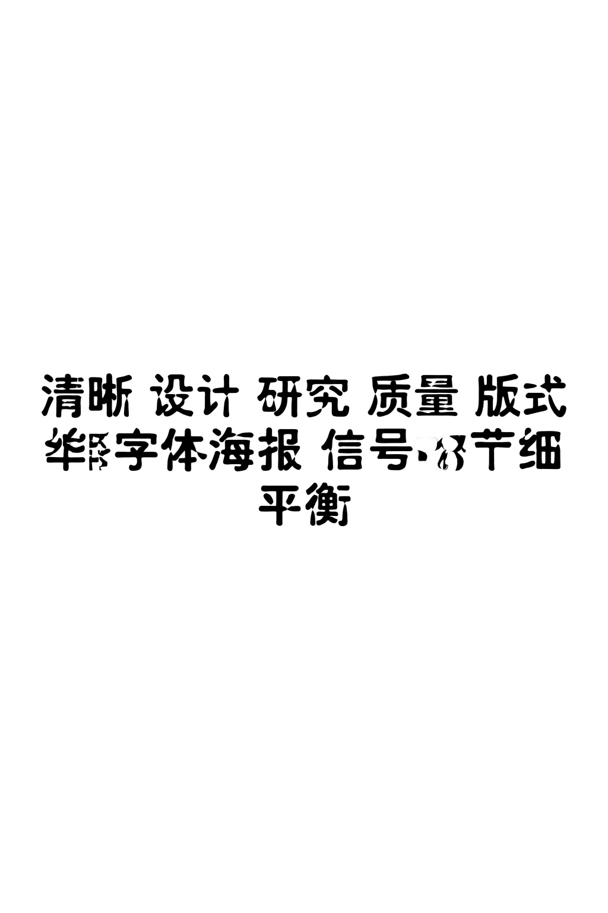
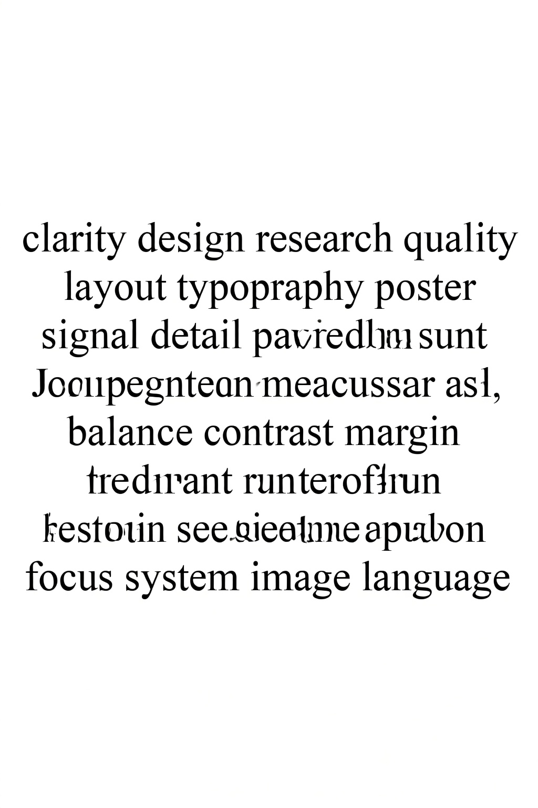
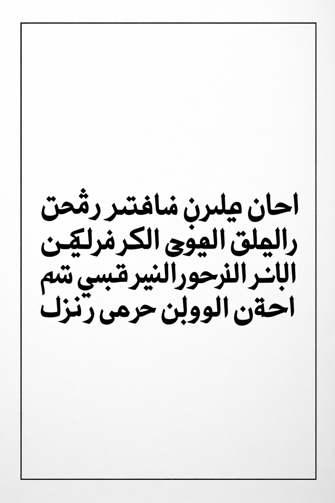
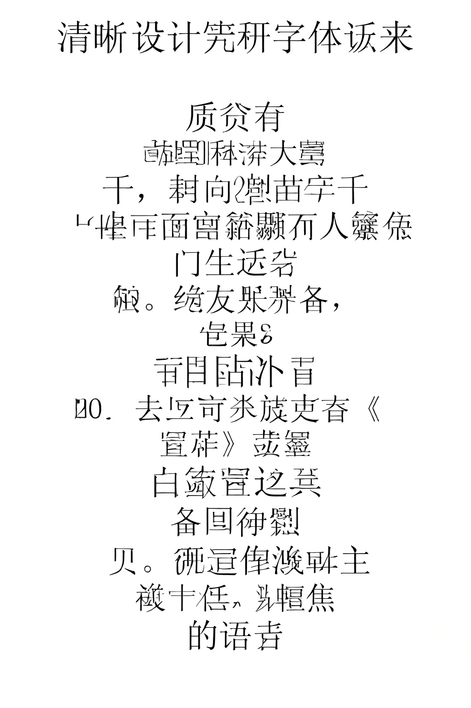
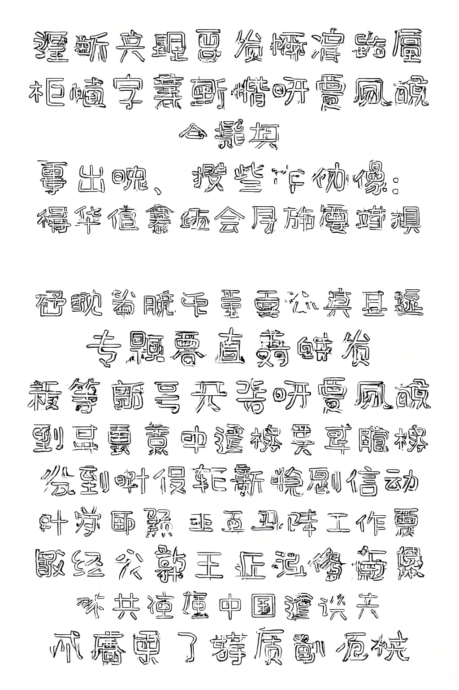

Experiment 06: Long Text Stress Test
English, Arabic, and Chinese only. Each prompt asks Qwen to typeset exact 10, 20, and 50-word blocks on a portrait document-style poster. The API is run with max_sequence_length=1024, which is the highest value accepted by the current server.
Observed Result
This page is the practical long-text boundary test after removing the unrealistic 100 and 500-word cases. At 10 words, English and Chinese preserve some requested terms but already introduce invented or malformed text, while Arabic is malformed. At 20 and 50 words, all three languages degrade into approximate document texture rather than exact text transcription.
The earlier 100 and 500-word outputs were removed from this report because they mostly measure impossible dense-page rendering rather than useful poster text fidelity.
Contact Sheet

Individual Outputs

target words: 10
wall: 26.78s
Target text
clarity design research quality layout typography poster signal detail balance

target words: 10
wall: 26.88s
Target text
تصميم واضح بحث جودة تخطيط طباعة ملصق إشارة تفاصيل توازن

target words: 10
wall: 26.99s
Target text
清晰 设计 研究 质量 版式 字体 海报 信号 细节 平衡

target words: 20
wall: 27.03s
Target text
clarity design research quality layout typography poster signal detail balance contrast margin section headline caption reader focus system image language

target words: 20
wall: 27.20s
Target text
تصميم واضح بحث جودة تخطيط طباعة ملصق إشارة تفاصيل توازن تباين هامش قسم عنوان شرح قارئ تركيز نظام صورة لغة

target words: 20
wall: 27.13s
Target text
清晰 设计 研究 质量 版式 字体 海报 信号 细节 平衡 对比 边距 章节 标题 说明 读者 焦点 系统 图像 语言

target words: 50
wall: 27.14s
Target text
clarity design research quality layout typography poster signal detail balance contrast margin section headline caption reader focus system image language model visual spacing grid rhythm shape meaning context structure workflow review sample output prompt style clean modern strong accurate stable clarity design research quality layout typography poster signal detail balance

target words: 50
wall: 27.58s
Target text
تصميم واضح بحث جودة تخطيط طباعة ملصق إشارة تفاصيل توازن تباين هامش قسم عنوان شرح قارئ تركيز نظام صورة لغة نموذج بصري مسافة شبكة إيقاع شكل معنى سياق بنية مسار مراجعة عينة نتيجة موجه أسلوب نظيف حديث قوي دقيق ثابت تصميم واضح بحث جودة تخطيط طباعة ملصق إشارة تفاصيل توازن

target words: 50
wall: 27.61s
Target text
清晰 设计 研究 质量 版式 字体 海报 信号 细节 平衡 对比 边距 章节 标题 说明 读者 焦点 系统 图像 语言 模型 视觉 间距 网格 节奏 形状 意义 语境 结构 流程 复核 样本 结果 提示 风格 干净 现代 强度 准确 稳定 清晰 设计 研究 质量 版式 字体 海报 信号 细节 平衡
Prompts And Targets
Download CSV for this experiment
| Case | Seed | Words | Prompt |
|---|---|---|---|
| English 10 words | 97010 | 10 | Create a clean portrait white document poster that typesets exactly this 10-word English text block. Use black sans-serif typography, clean margins, and simple line wrapping. Do not summarize, do not add decorative letters, and do not add any extra words. Exact English text block: "clarity design research quality layout typography poster signal detail balance" |
| Arabic 10 words | 98010 | 10 | Create a clean portrait white document poster that typesets exactly this 10-word Arabic text block. Use black Arabic sans-serif typography, correct right-to-left shaping, clean margins, and simple line wrapping. Do not translate, do not summarize, do not add decorative letters, and do not add any extra words. Exact Arabic text block: "تصميم واضح بحث جودة تخطيط طباعة ملصق إشارة تفاصيل توازن" |
| Chinese 10 words | 99010 | 10 | Create a clean portrait white document poster that typesets exactly this 10-word Chinese text block. Use black Chinese sans-serif typography, clean margins, and simple line wrapping. Do not translate, do not summarize, do not add decorative letters, and do not add any extra words. Exact Chinese text block: "清晰 设计 研究 质量 版式 字体 海报 信号 细节 平衡" |
| English 20 words | 97020 | 20 | Create a clean portrait white document poster that typesets exactly this 20-word English text block. Use black sans-serif typography, clean margins, and simple line wrapping. Do not summarize, do not add decorative letters, and do not add any extra words. Exact English text block: "clarity design research quality layout typography poster signal detail balance contrast margin section headline caption reader focus system image language" |
| Arabic 20 words | 98020 | 20 | Create a clean portrait white document poster that typesets exactly this 20-word Arabic text block. Use black Arabic sans-serif typography, correct right-to-left shaping, clean margins, and simple line wrapping. Do not translate, do not summarize, do not add decorative letters, and do not add any extra words. Exact Arabic text block: "تصميم واضح بحث جودة تخطيط طباعة ملصق إشارة تفاصيل توازن تباين هامش قسم عنوان شرح قارئ تركيز نظام صورة لغة" |
| Chinese 20 words | 99020 | 20 | Create a clean portrait white document poster that typesets exactly this 20-word Chinese text block. Use black Chinese sans-serif typography, clean margins, and simple line wrapping. Do not translate, do not summarize, do not add decorative letters, and do not add any extra words. Exact Chinese text block: "清晰 设计 研究 质量 版式 字体 海报 信号 细节 平衡 对比 边距 章节 标题 说明 读者 焦点 系统 图像 语言" |
| English 50 words | 97050 | 50 | Create a clean portrait white document poster that typesets exactly this 50-word English text block. Use black sans-serif typography, clean margins, and simple line wrapping. Do not summarize, do not add decorative letters, and do not add any extra words. Exact English text block: "clarity design research quality layout typography poster signal detail balance contrast margin section headline caption reader focus system image language model visual spacing grid rhythm shape meaning context structure workflow review sample output prompt style clean modern strong accurate stable clarity design research quality layout typography poster signal detail balance" |
| Arabic 50 words | 98050 | 50 | Create a clean portrait white document poster that typesets exactly this 50-word Arabic text block. Use black Arabic sans-serif typography, correct right-to-left shaping, clean margins, and simple line wrapping. Do not translate, do not summarize, do not add decorative letters, and do not add any extra words. Exact Arabic text block: "تصميم واضح بحث جودة تخطيط طباعة ملصق إشارة تفاصيل توازن تباين هامش قسم عنوان شرح قارئ تركيز نظام صورة لغة نموذج بصري مسافة شبكة إيقاع شكل معنى سياق بنية مسار مراجعة عينة نتيجة موجه أسلوب نظيف حديث قوي دقيق ثابت تصميم واضح بحث جودة تخطيط طباعة ملصق إشارة تفاصيل توازن" |
| Chinese 50 words | 99050 | 50 | Create a clean portrait white document poster that typesets exactly this 50-word Chinese text block. Use black Chinese sans-serif typography, clean margins, and simple line wrapping. Do not translate, do not summarize, do not add decorative letters, and do not add any extra words. Exact Chinese text block: "清晰 设计 研究 质量 版式 字体 海报 信号 细节 平衡 对比 边距 章节 标题 说明 读者 焦点 系统 图像 语言 模型 视觉 间距 网格 节奏 形状 意义 语境 结构 流程 复核 样本 结果 提示 风格 干净 现代 强度 准确 稳定 清晰 设计 研究 质量 版式 字体 海报 信号 细节 平衡" |